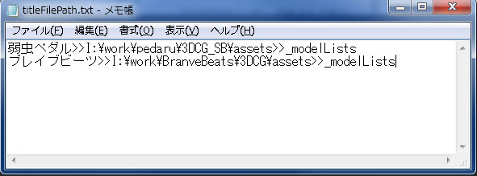

作品ファイルパス
…「作品名」「アセットパス」「モデルリストフォルダ名」の情報を格納しているテキストファイルです。
構成は次のとおりです。
作品名>>アセットパス>>モデルリストフォルダ名
・必ず各項目の間に「>>」を半角で入れる必要があります。
・アセットパスは実在するパスでないとエラーが起こります。
・必ずアセットパス直下にあるフォルダをモデルリストフォルダにする必要があります。

モデルリストファイル
…ＵＩのリスト項目を構成する情報が格納されているテキストファイルです。
構成は次のとおりです。
===リスト名
---タブ名>>シーンフォルダ名
モデルコード コメント
===リスト名
---タブ名
モデルコード コメント
.
.
.
必ず次のルールを守ってください。
・リスト名の前に「===」を必ずつけてください
・タブ名の前に「---」を必ずつけてください
・タブ名と同一のフォルダ内にシーンフォルダがあり、
そこからmbファイルを読み込むようにしたいとき（例えばscenesフォルダから読み込みたいとき）
タブ名の後ろに「>>」をつけてシーンフォルダ名を書いてください。
・モデルコードとコメントの間にタブでスペースをあけてください。